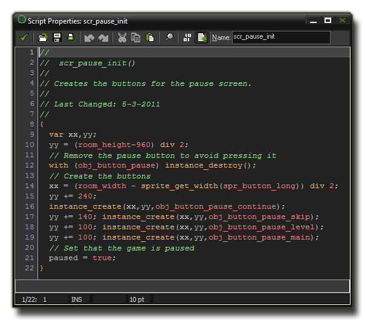

A program consists of a set of instructions, called statements, that are then interpreted by GameMaker:Studio and used to make something happen within your game. That "something" can be as simple as
adding 2 and 2 to get 4, or as complex as making an enemy run away when their health gets below a certain value. The actual structure of the program can vary greatly, depending on the functions it uses, but broken
down to basics it just looks like this :
{
<statement>;
<statement>;
...
}
A program must start with the symbol '{' and end with the symbol '}', and between these symbols there are the statements, which must be separated with a ';' symbol. Here is a more visual representation of how a program can look, this time created as a script in the GameMaker:Studio Script Editor : 
There are a number of different types of statements, which are discussed at length in subsequent sections of the manual.